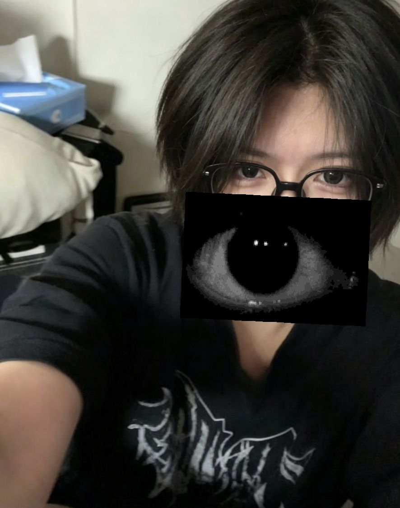
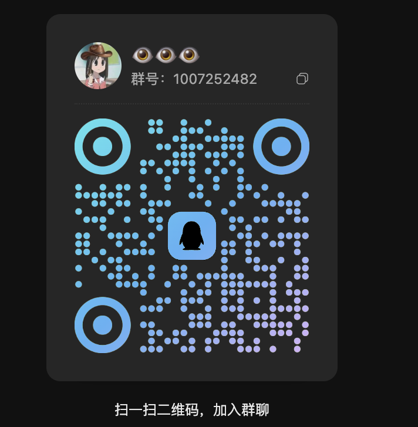

Accelerator🇦🇺
@HanQWQ457437
关于我你可能想知道
08年 现在大— 177 60kg
可以的话多来点人类来陪我聊天 有qq群 会审核
现在在新西兰留学 苏州人 放假会回国
多来点人陪我聊天打游戏可以吗。联机游戏主要玩cs apex mc 塔科夫 怪物猎人 R6 我的世界 游戏王 md ygo tcg 后室 僵毁 潜渊症什么的
唯一的雷点是不回我信息 很忙除外
关于游戏王我主要玩电子龙 捕食植物 银河眼 机关傀儡 龙辉巧 虫惑魔 白银城 恐啡肽 珠泪 命运英雄 霍普水产 ddd 魔术师 异色眼 废二百夫长 旅鸟 相剑 方界 教导纠罪巧 rr 宝石骑士 月光 海皇 祀剑

